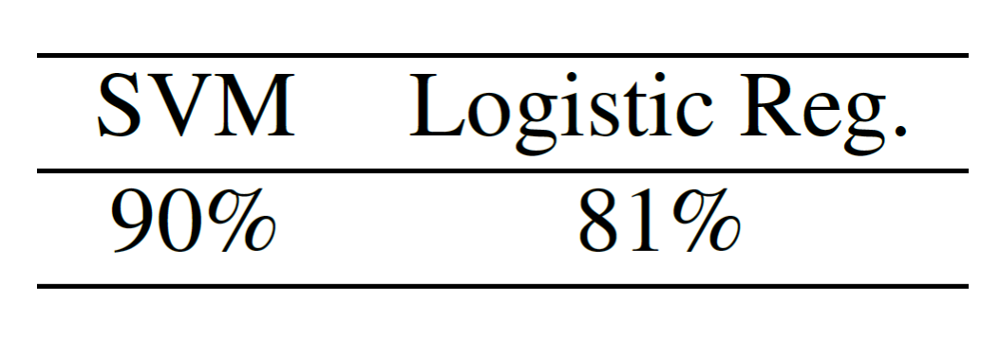

Detection Faces-HQ
To the best of our knowledge, no public dataset gathers images containing both artificially and real faces, therefore, we have created our own called Faces-HQ. In order to have a sufficient variety of faces, we have chosen to download and label, images available from CelebA-HQ dataset, Flickr-Faces-HQ dataset, 100K Facesproject and www.thispersondoesnotexist.com. In total, we have collected 40K high quality images being half of them real and the other half fake faces, achieving in this manner a balanced dataset.
Click here to go the experiments on Faces-HQ.
Results
Faces-HQ dataset. Test accuracy using SVM, logistic regression and k-means classifier under different data settings.
Detection CelebA
CelebA CelebFaces Attributes Dataset (CelebA) is a large-scale face attributes dataset with more than 200K celebrity images, each with 40 attribute annotations. The images in this dataset cover large pose variations and background clutter. CelebA has large diversities, large quantities, and rich annotations
Click here to go the experiments on CelebA.
Results
Detection DeepFakeDetection (FaceForensics++)
FaceForensics++ is a forensics dataset consisting of video sequences that have been modified with different automated face manipulation methods. Additionally,it is hosting DeepFakeDetection Dataset. In particular, this dataset contains 363 original sequences from 28 paid actors in 16 different scenes as well as over 3000 manipulated videos using DeepFakes and their corresponding binary masks. All videos contain a trackable mostly frontal face without occlusions which enables automated tampering methods to generate realistic forgeries.
Click here to go the experiments on DeepFakeDetection.
Results
DeepFakeDetection dataset.
Results based on frames.
Test accuracy using SVM and logistic regression classifier under different data settings.

Results based on videos. (We apply a simple majority vote over the single frame classifications).
Test accuracy using SVM and logistic regression classifier.
